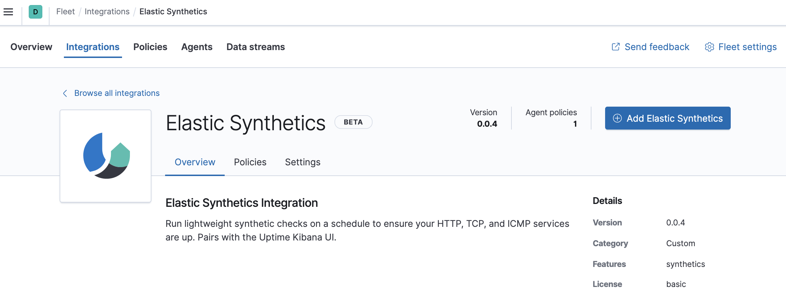
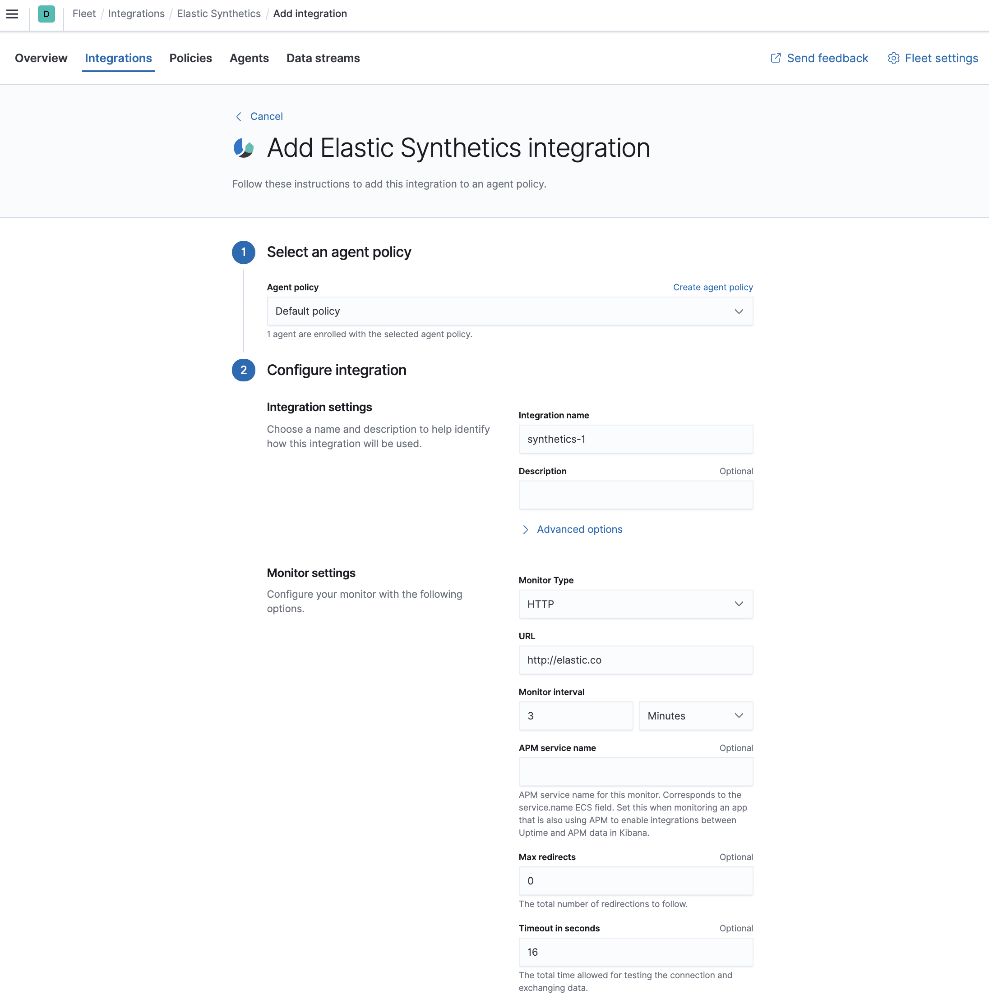

Quick start: Get logs, metrics, and uptime data into the Elastic Stackedit
This guide describes how to:
- Set up Fleet
- Send data to the Elastic Stack using Elastic Agent
- Monitor logs and metrics from systems and services across your organization
- Monitor the availability of your HTTP, TCP, and ICMP services using the Synthetics integration
- Monitor Nginx logs and metrics using the Nginx integration
For feedback and questions, please contact us in the discuss forum.
Prerequisitesedit
-
You need Elasticsearch for storing and searching your data, and Kibana for visualizing and managing it. You can use our hosted Elasticsearch Service on Elastic Cloud (recommended), or self-manage the Elastic Stack on your own hardware.
Here’s what you need for each deployment type:
- Access to a deployment of our hosted Elasticsearch Service on Elastic Cloud. The Elasticsearch Service is available on AWS, GCP, and Azure. Try it out for free. This deployment must include an APM & Fleet node.
- User with the superuser role. See Built-in roles.
- Access to an Elasticsearch cluster and Kibana (version 7.14) with a basic license. Learn how to install the Elastic Stack on your own hardware.
- Secure, encrypted connection between Kibana and Elasticsearch. For more information, see Configure security for the Elastic Stack.
- User with the superuser role. See Built-in roles.
-
In the Elasticsearch configuration, the
built-in API key
service must be enabled.
(
xpack.security.authc.api_key.enabled: true) -
In the Kibana configuration, the saved objects encryption key
must be set. Fleet requires this setting in order to save API keys and encrypt
them in Kibana. You can either set
xpack.encryptedSavedObjects.encryptionKeyto an alphanumeric value of at least 32 characters, or run thekibana-encryption-keyscommand to generate the key.
Example security settings
For testing purposes, you can use the following settings to get started quickly, but make sure you properly secure the Elastic Stack before sending real data.
elasticsearch.yml example:
xpack.security.enabled: true xpack.security.authc.api_key.enabled: true
kibana.yml example:
xpack.security.enabled: true xpack.encryptedSavedObjects.encryptionKey: "something_at_least_32_characters"
-
An internet connection is required for Kibana to download integration packages
from the Elastic Package Registry. Make sure the Kibana server can connect to
https://epr.elastic.coon port443. - Fleet is currently only available to users with the superuser role.
Step 1: Set up Fleetedit
Use Fleet in Kibana to get logs, metrics, and security data into the Elastic Stack.
Not using Fleet? Advanced users who want to configure and manage Elastic Agents manually can run agents standalone.
The first time you use Fleet, you might need to set it up and add a Fleet Server:
Elastic Cloud runs a hosted version of Fleet Server. No extra setup is required unless you want to scale your deployment.
To confirm that Fleet Server is available in your deployment:
- Log in to Kibana and go to Management > Fleet.
- Click the Agents tab.
- Under Agent policy, look for Elastic Cloud agent policy — Fleet Server is the agent enrolled in the Elastic Cloud agent policy. This policy is managed by Elastic Cloud. You cannot modify it. Confirm that the agent status is Healthy.
Don’t see the Fleet Server agent? Make sure your deployment includes an APM & Fleet node. This node is required to use Fleet Server.

To deploy Fleet Server on a self-managed cluster, install an Elastic Agent and enroll it in the default Fleet Server policy. The policy is created automatically when you run Fleet for the first time.
To add Fleet Server:
- Log in to Kibana and go to Management > Fleet. The first time you visit this page, it might take a minute to load.
-
Click Fleet settings, and in the Fleet Server hosts field, specify the
URLs Elastic Agents will use to connect to Fleet Server. For example,
https://192.0.2.1:8220, where192.0.2.1is the host IP where you will install Fleet Server. -
In the Elasticsearch hosts field, specify the Elasticsearch URLs where Elastic Agents will send data. For example,
https://192.0.2.0:9200.For more information about these settings, see Fleet UI settings.
- Save and apply the settings.
-
Click the Agents tab and follow the in-product instructions to add a Fleet server:

Notes:
- Make sure you download an x64 architecture installation package.
-
After generating the service token, save it to a secure location. You might
want to use this token later to scale your deployment by adding Fleet Servers.
For other ways to generate service tokens, see
elasticsearch-service-tokens. -
The
installcommand installs the Elastic Agent as a managed service and enrolls it in a Fleet Server policy:sudo ./elastic-agent install -f --fleet-server-es=http://localhost:9200 \ --fleet-server-service-token=AAEAAWVsYXN0aWMvZmxlZXQtc2VydmVyL3Rva2VuLTE2MTkxMzg3MzIzMTg6dzEta0JDTmZUZGlDTjlwRmNVTjNVQQ
For more Fleet Server commands, see Command reference.
If installation is successful, you’ll see the Fleet Server Elastic Agent on the Agents tab in Fleet. Notice that the Default Fleet Server Policy is assigned to the Elastic Agent. This policy is created when you run Fleet for the first time.

For more information, see Fleet Server.
Step 2: Add an Elastic Agent to Fleetedit
Elastic Agent is a single, unified agent that you can deploy to hosts or containers to collect data and send it to the Elastic Stack. Behind the scenes, Elastic Agent runs the Beats shippers or Elastic Endpoint required for your configuration.
To send logs and metrics to the Elastic Stack:
- On the Agents tab in Fleet, click Add agent.
-
Under Enroll in Fleet, follow the in-product installation steps.

See the download page for other installation options.
Notes:
- Use the default agent policy to get started quickly. This policy includes a system integration for collecting logs and metrics from the host system. You can change the policy later.
-
The
installcommand installs the Elastic Agent as a managed service, enrolls it in the selected policy, and starts the service. For example:./elastic-agent install -f --url=https://10.0.2.2:8220 \ --enrollment-token=blJqaUdua0JqYXA0bmNscVVjUkE6ZGh4WWNRSHRRek9aSS1paEs2cHdFQQ==
If you see an "x509: certificate signed by unknown authority" error, you might be trying to enroll in a Fleet Server that uses self-signed certs. To fix this problem in a non-production environment, pass the
--insecureflag. For more information, refer to the troubleshooting guide. - Because Elastic Agent is installed as an auto-starting service, it will restart automatically if the system is rebooted.
- To see where files are installed, see Installation layout.
If installation is successful, you’ll see the agent on the Agents tab in Fleet. Notice that the Default policy is assigned to the agent.

If the status hangs at Enrolling, make sure the elastic-agent process
is running.
If you run into problems:
- Check the Elastic Agent logs. If you use the default policy, agent logs and metrics are collected automatically unless you change the default settings. For more information, refer to Configure logging for Fleet-managed Elastic Agents.
- Refer to Troubleshoot common problems.
Step 3: Monitor host logs and metricsedit
Next, view the data sent by Elastic Agent. Right now, Elastic Agent is only sending data about the host system because you haven’t configured the agent to collect data from other sources yet.
To see host logs and metrics:
- In Fleet, click the Data streams tab.
-
In the Actions column, navigate to the dashboards corresponding to the data stream. For example, to see host metrics, select one of the system datasets:

Then navigate to the [Metrics System] Host overview dashboard:

Step 4: Monitor HTTP, TCP, and ICMP servicesedit
[beta] This functionality is in beta and is subject to change. The design and code is less mature than official GA features and is being provided as-is with no warranties. Beta features are not subject to the support SLA of official GA features. Next, you’ll add the Elastic Synthetics integration, enabling you to monitor the status and response times of applications and services in real time. You can monitor the availability of network endpoints via HTTP, TCP, or ICMP.
Add the Elastic Synthetics integration to the default policy used by your agent. You use policies to manage settings across a group of agents. An agent policy may contain any number of integrations for collecting observability data from the various services running on your host.
-
In Kibana, go to Management > Integrations, and search for the Elastic Synthetics integration.

-
Click the Elastic Synthetics integration to see more details about it, then click Add Elastic Synthetics.
 -
On the Add Elastic Synthetics integration page, under Configure integration, enter the integration name and select HTTP from the following monitor types:
HTTP
Connects via HTTP and verifies that the host returns the expected response.
For detailed information about HTTP options, see our Heartbeat documentation.
TCP
Connects via TCP and verifies the endpoint by sending and receiving a custom payload. By default, the hostname and port are required.
For detailed information about TCP options, see our Heartbeat documentation.
ICMP
Uses an ICMP
v4andv6Echo Request to ping the configured hosts. By default, the host name is required.For detailed information about ICMP options, see our Heartbeat documentation.
- Enter the URL you want to monitor for availability and select a monitor interval in seconds or minutes. By default, a monitoring schedule of every 3 minutes is selected.
- The HTTP and TCP monitor types both support TLS. Under TLS settings, select Enable TLS configuration. Click the down arrow next to advanced HTTP or TCP options, and then enter your required settings.
-
Under Apply to agent policy, select the
default policy. - When you’re done, click Save integration, then Save and deploy changes.
-
To see the updated policy, click the Default policy link.
The newly added Elastic Synthetics integration should appear under Integrations in the default policy, along with the
system-1integration.
All Elastic Agents that use this policy will collect logs, metrics, and uptime data from the host.
- To view the data in the Uptime app, go to Observability > Uptime.
Step 5: Monitor Nginx logs and metricsedit
Next, you’ll browse a catalog of integrations, then add an Nginx integration to the default policy used by your agent.
For these steps, we assume that you have nginx running on some of your
infrastructure, and want to collect logs and metrics from it.
-
In Kibana, go back to Management > Integrations, and search for the Nginx integration.

-
Click the Nginx integration to see more details about it, then click Add Nginx.

-
On the Add Nginx integration page, select the default policy.

- Under Configure integration, click the down arrow next to enabled streams and make sure the Paths are correct for your host. Inspect or change other settings
- When you’re done, save and deploy the changes.
-
To see the updated policy, click the Default policy link.
The newly added Nginx integration should appear under Integrations in the default policy, along with the
system-1andsynthetics-1integrations.
All Elastic Agents that use this policy will collect logs and metrics from the Nginx server and the host, along with uptime data.
- To view the data, click View all agent policies to return to the Fleet home page, then click the Data streams tab.
- In the Actions column, navigate to the dashboards corresponding to the data stream.
What’s next?edit
- Now that data is streaming into the Elastic Stack, take your investigation to a deeper level! Use Elastic Observability to unify your logs, metrics, uptime, and application performance data.
- Want to protect your endpoints from security threats? Try Elastic Security. Adding endpoint protection is just another integration that you add to the agent policy!
- Are your eyes bleary from staring at a wall of screens? Create alerts and find out about problems while sipping your favorite beverage poolside.
- Want Elastic to do the heavy lifting? Use machine learning to detect anomalies.
- Got everything working like you want it? Roll out your agent policies to other hosts by deploying Elastic Agents across your infrastructure!